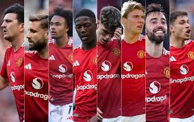

History
Manchester United Football Club, founded in 1878 as Newton Heath LYR, is one of the most successful and iconic football clubs in the world. The club changed its name to Manchester United in 1902 and moved to Old Trafford in 1910. United enjoyed early successes, but its true global rise began under Sir Matt Busby, who rebuilt the team after the 1958 Munich air disaster and led them to European Cup glory in 1968. Sir Alex Ferguson’s era from 1986 to 2013 cemented United’s dominance, with 13 Premier League titles and two Champions League trophies, shaping its legendary status.
Achievements
20 English league titles, 12 FA Cups, 3 UEFA Champions League trophies, and countless other honors mark Manchester United's legacy of excellence.
Current Squad
The squad features experienced stars like Bruno Fernandes and Marcus Rashford, alongside emerging talents that represent the future of the club.
